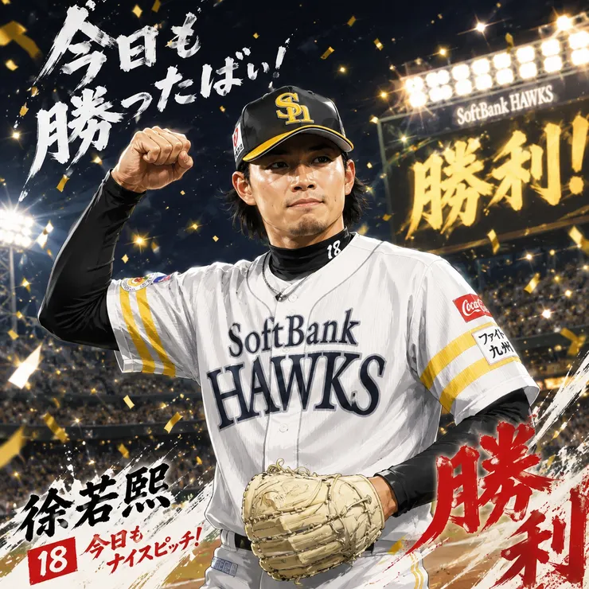
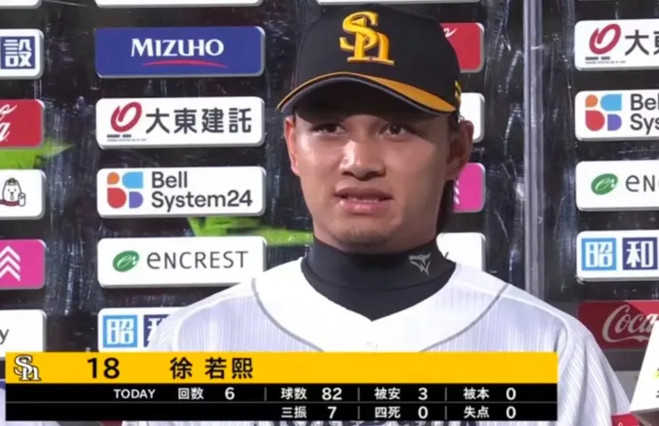

龍之子徐若熙重返一軍奪勝
用82球完成6局 7次三振 3安打 0失分
這不是徐若熙本季在日本職棒最漂亮的一場先發，卻是一名年輕投手走出低潮、重新證明自己的重要時刻。
幾週前，他才在連續兩場失掉 7 分後黯然離開一軍。明明投出在日職最速的 157 公里，徐若熙卻說出一句讓許多台灣球迷心疼的話：「感覺自己好像不屬於這裡。」短短一句話，透露的不是技術問題，而是信心的崩塌。
從中職王牌到挑戰日本職棒，徐若熙知道這條路不容易。前兩場一軍先發的驚艷表現，讓人以為他已經站穩腳步。但職業棒球最殘酷的地方就在於，當對手開始研究你、破解你，你必須再次進化。
連續兩場失掉 7 分後，被下放二軍。有人開始懷疑被偷暗號，有人開始擔心球路被破解。
然而徐若熙不能夠停在原地，他在二軍重新調整投球機制、重新找回節奏，並用一場無四死球完封勝，敲響反攻號角。
而今天，面對廣島隊，他給出了最好的答案。用 82 球完成 6 局投球，送出 7 次三振。沒有丟掉任何分數。更重要的是，那種敢於攻擊好球帶的自信回來了。
對手不是廣島，是擊敗那個不安全的自己

這或許不是徐若熙旅日生涯最耀眼的一場比賽，卻很可能是最重要的一場。
有些勝利記錄在計分板上，有些勝利則發生在心裡。
今天的若熙，同時贏下了這兩場比賽。
賽後站上英雄專訪時，溫和而霸氣的回應「過去的失敗，將是我未來成功的養分」，我們知道龍之子回來了。請持續帶著我們的期待，往更棒的地方前進！